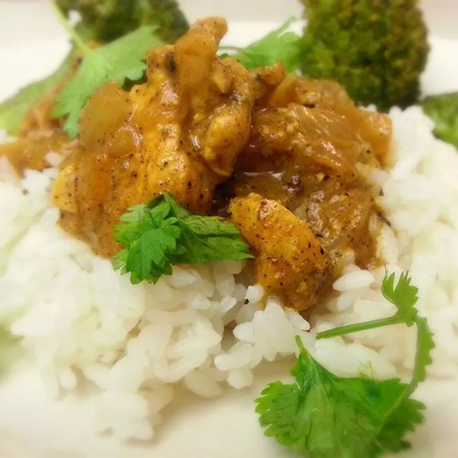

Indian Chicken Curry

Description
Chicken curry from the Indian subcontinent typically features chicken stewed in a tomato-based sauce seasoned with aromatic spices. This recipe, like many others, calls for curry powder (a spice blend made with coriander, turmeric, cumin, and chili powder).
Ingredients
- Olive oil
- Onion
- Garlic
- Curry powder
- Ground Cinnamon
- Paprika
- Bay leaf
- Fresh ginger root
- White sugar
- Salt
- Boneless chicken breast
- Tomato paste
- Yogurt
- Coconut milk
- Lemon juice
- Cayenne pepper
Steps
- Heat olive oil in a skillet over medium heat. Sauté onion until lightly browned.
- Stir in garlic, curry powder, cinnamon, paprika, bay leaf, ginger, sugar, and salt. Continue stirring for 2 minutes.
- Add chicken pieces, tomato paste, yogurt, and coconut milk. Bring to a boil, reduce heat, and simmer for 20 to 25 minutes.
- Remove bay leaf, and stir in lemon juice and cayenne pepper. Simmer 5 more minutes.
- Serve hot and enjoy!